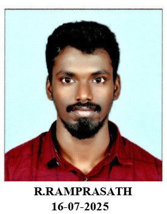
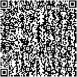
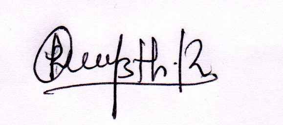
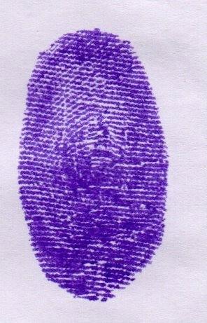

| பயனர் எண் |
: |
25CR10003913 |
விண்ணப்பதாரரின்
பெயர் |
: |
RAMPRASATH R |

|
| சேர்க்கை எண் |
: |
3503188 |
 |
தந்தை / தாய் /
பாதுகாவலர் பெயர் |
: |
RADHAKRISHNAN K
|
| பிறந்த தேதி |
: |
29-04-1997 |
| பாலினம் |
: |
ஆண் |

|
விண்ணப்பதாரரின்
இடது கை
பெருவிரல் ரேகை |
: |
|

|
| தேர்வு நாள் |
பாடம் |
அறிக்கை நேரம் |
தேர்வு நேரம் |
தேர்வு மையத்தின் முகவரி |
| 09.11.2025 |
முதன்மை எழுத்துத்தேர்வு & தமிழ் மொழி தகுதித் தேர்வு |
காலை 08.00 மணி முதல் 09.30 மணி வரை |
காலை 10:00 மணி முதல் மதியம் 12:40 மணி வரை |
பொன்னையா ராமஜெயம், அறிவியல் மற்றும் தொழில் நுட்ப நிகர்நிலைப் பல்கலைக்கழகம்,
திருச்சி தேசிய நெடுஞ்சாலை,
வல்லம், தஞ்சாவூர் - 613 403 |
|
உறுப்பினர் செயலாளர்
தமிழ்நாடு சீருடைப் பணியாளர் தேர்வு வாரியம்
|
விண்ணப்பதாரர்களுக்கான அறிவுரைகள்
- விண்ணப்பதாரர் தேர்வுக்கூட சீட்டினை இவ்வாரிய அதிகாரபூர்வ இணைய தளத்திலிருந்து பதிவிறக்கம் செய்த பின்னர் அதில் குறிப்பிட்டுள்ள விவரங்களைச் சரி பார்க்கவும். இதில் ஏதேனும் சந்தேகங்கள் இருந்தால் இவ்வாரிய உதவி மையத்தைத் தொடர்பு கொள்ளவும்.
- விண்ணப்பதாரர் தேர்வுக்கூட சீட்டு, அடையாள அட்டை, கருமைநிற பந்துமுனை எழுதுகோல் தவிர பிறபொருள் எதுவும் தேர்வுக் கூடத்திற்குள் எடுத்துவரக்கூடாது.
- தேர்வுக்கூட சீட்டுடன் கூடுதலாக விண்ணப்பதாரர் புகைப்படத்துடன் கூடிய அரசால் வழங்கப்பட்ட அடையாள அட்டையான ஆதார், ஓட்டுநர் உரிமம், வாக்காளர் அடையாள அட்டை ஆகியவற்றில் ஏதாவது ஒரு அசலைக் கொண்டு வரவேண்டும்.
- தேர்வுக்கூட சீட்டில், விண்ணப்பதாரரின் புகைப்படம் அச்சிடப்படவில்லை அல்லது தெளிவாக இல்லை அல்லது விண்ணப்பதாரரின் தோற்றத்துடன் பொருந்தவில்லை என்றால், விண்ணப்பதாரர் தன்னுடைய சமீபத்தில் எடுக்கப்பட்ட கடவுச்சீட்டு (Passport) அளவிலான வண்ண புகைப்படம் ஒன்றினை ஒரு வெள்ளை தாளில் ஒட்டி, அதில் தனது பெயர், முகவரி, சேர்க்கை எண்ணை குறிப்பிட்டு, முறையாகக் கையொப்பமிட்டு, தேர்வுக்கூட சீட்டின் ஒளி நகல் மற்றும் ஆதார் அட்டை / கடவுச்சீட்டு (Passport) / ஓட்டுநர் உரிமம் / நிரந்தரக் கணக்கு அட்டை (PAN CARD) / வாக்காளர் அடையாள அட்டை, இவற்றில் ஏதேனும் ஒன்றின் ஒளி நகலை (xerox copy) இணைத்து, அரசிதழ் பதிவு பெற்ற ஒரு அலுவலரிடம் சான்றொப்பம் பெற்று கொண்டு வர வேண்டும்.
- விண்ணப்பதாரர் தேர்வுக்கூட சீட்டில் குறிப்பிட்டுள்ள தேர்வு மையத்தில் மட்டுமே தேர்வு எழுத அனுமதிக்கப்படுவார். தேர்வு மையத்தினை எக்காரணத்தைக் கொண்டும் மாற்றம் செய்ய இயலாது.
- தேர்வுக்கூட சீட்டினை கொண்டு வராத விண்ணப்பதாரர் தேர்வு மையத்திற்குள் அனுமதிக்கப்படமாட்டார்.
- விண்ணப்பதாரர்கள் தேர்வு கூடத்திற்கு தேர்வு தொடங்குவதற்கு குறைந்த பட்சம் 60 நிமிடங்கள் முன்னதாக வர வேண்டும். எடுத்துக்காட்டாக காலை அமர்விற்கு 09.00 மணிக்கு முன்னதாக வர வேண்டும். மேற்குறிப்பிடப்பட்ட கால வரையறைக்கு பின்னர் எந்தவொரு விண்ணப்பதாரரும், தேர்வு மையத்திற்குள் அனுமதிக்கப்படமாட்டார்கள். மேலும் காலை 09.30 மணிக்கு தேர்வு மையத்தின் அனைத்து நுழைவு வாயில்களும் மூடப்படும்.
- விண்ணப்பதாரர் விடைத்தாளில் பட்டை தீட்ட / எழுத கருமைநிற பந்துமுனை எழுதுகோல் (Black Ink Ballpoint Pen) மட்டுமே பயன்படுத்த வேண்டும். பிற வண்ண மையினாலோ அல்லது பென்சிலாலோ பட்டை தீட்டினால் விடைத்தாள் மதிப்பீடு செய்யப்படமாட்டாது.
- கைப்பேசி (Mobile Phone), கைக்கணி (Calculator) மற்றும் ஊடலை சாதனங்கள் (Bluetooth Devices) அல்லது மின்னணு சாதனங்கள் (Electronic Equipments) மற்றும் வேறு எந்த வித மின்னணு சாதனங்களையும் (Other Electronic Devices) தேர்வு கூடத்திற்குள் எடுத்து வர அனுமதி இல்லை. மீறினால் அவரது தேர்வுநிலை இரத்து செய்யப்படும்.
- விண்ணப்பதாரர் தேர்வு முடியும் வரை தேர்வுக்கூட அறையை விட்டு வெளியே செல்ல அனுமதிக்கப்படமாட்டார் மற்றும் அறை கண்காணிப்பாளர் அனுமதிக்கும் வரை தேர்வுக்கூட அறையை விட்டு விண்ணப்பதாரர்கள் வெளியே செல்லக்கூடாது.
- தேர்வு எழுதும் போது பேசவோ, சைகை புரியவோ, பார்த்து எழுதவோ, வினாத்தாள் / விடைத்தாளை மாற்றவோ கூடாது. அப்படி மீறினால் அவரது தேர்வு நிலை இரத்து செய்யப்படுவதுடன் சம்மந்தப்பட்டவர்கள் மீது சட்ட நடவடிக்கையும் மேற்கொள்ளப்படும்
- விண்ணப்பதாரர், தேர்வறையின் இருக்கையில் அமர்வதற்கு முன் மேசையில் குறிப்பிடப்பட்டுள்ள சேர்க்கை எண் மற்றும் வினாத்தாளின் வகை சரிபார்ப்பிற்குப் பின் விண்ணப்பதாரர் அவருக்கென்று ஒதுக்கப்பட்ட இருக்கையில் மட்டுமே அமர வேண்டும்.
II) தேர்வுக்கூட சீட்டு
- விண்ணப்பதாரர் தேர்வு கூட சீட்டின் முதல் தாள் மட்டுமே தேர்வு மையத்திற்கு கொண்டு வர வேண்டும். மேலும் விண்ணப்பதாரர்களுக்கான அறிவுரைகள் அடங்கிய பகுதியை தேர்வு மையத்திற்குள் அனுமதிக்கப்படமாட்டாது. மேலும் தேர்வுக்கூட சீட்டின் பின்பகுதியில் எதுவும் எழுதக் கூடாது.
- விண்ணப்பதாரர் தேர்வுக்கூட சீட்டின் நகலை தங்களது பாதுகாப்பில் நிரந்தரமாக வைத்துக் கொள்ள வேண்டும். எக்காரணத்தை முன்னிட்டும் தேர்வுக்கூட சீட்டு மீண்டும் வழங்கப்படமாட்டாது.
III) OMR விடைத்தாள்
- விண்ணப்பதாரர் OMR விடைத்தாளினை உபயோகப்படுத்தும் முன்னர், புகைப்படம் மற்றும் விவரங்கள் அனைத்தும் சரி பார்த்து அவை விண்ணப்பதாரரின் விவரங்கள்தானா என உறுதி செய்து கொள்ள வேண்டும். OMR விடைத்தாளில் உள்ள தகவல்கள் ஏதேனும் தவறாக இருந்தால் அல்லது எந்த வகையிலேனும் குறைபாடுடையதாக இருந்தால், விண்ணப்பதாரர் விவரங்களை நிரப்புவதற்கு முன்னர், அதனை உடனடியாக மாற்றிக் கொடுக்கும்படி அறைக் கண்காணிப்பாளரிடம் கோர வேண்டும். தேர்வு தொடங்கிய பின்னர் OMR விடைத்தாளில் ஏதேனும் குறைபாடு கண்டறிந்தால் மாற்றித் தரப்படமாட்டாது.
- தேர்வு தொடங்குவதற்கு முன் விடைத்தாளில் குறிப்பிடப்பட்டுள்ள விதிமுறைகளைப் படித்த பின் விண்ணப்பதாரர், OMR விடைத்தாளின் பக்கம் 1 - இல் தனது கையொப்பத்தினை அதற்கென ஒதுக்கப்பட்ட இடத்தில் இட வேண்டும்.
- வினாத்தாளின் வகையை அதற்கான இடத்தில் பட்டை தீட்டவும். வினாத்தாளின் வகை முறையாக பட்டை தீட்டப்படவில்லையெனில் விண்ணப்பதாரரின் விடைத்தாள் மதிப்பிடப்பட மாட்டாது.
- ஒரு வினாவிற்கு ஒரு விடையை மட்டுமே தேர்ந்தெடுத்து பட்டை தீட்ட வேண்டும். ஒன்றுக்கு மேற்பட்ட விடைகளை பட்டை தீட்டியிருந்தாலோ அல்லது அடித்தல் திருத்தல் மேற்கொண்டிருந்தாலோ அவ்வினாக்களுக்கு மதிப்பெண் வழங்கப்படமாட்டாது. மேலும் OMR விடைத்தாளினை எக்காரணத்தைக் கொண்டும் மடிக்க கூடாது.
- தேர்வு நிறைவுற்ற பிறகு விண்ணப்பதாரர்கள் அவர்களது இடதுகை பெருவிரல் ரேகைப் பதிவு மற்றும் கையொப்பத்தினை OMR விடைத்தாளில் பக்கம் 2 - இல் அதற்கென உரிய கட்டத்தில் பதிவிடவேண்டும்.
IV) வருகைத்தாள்
OMR விடைத்தாள் மற்றும் வினாத் தொகுப்பு ஆகியவற்றில் குறைபாடு ஏதேனும் இருக்கிறதா என சரிபார்க்கப்பட்ட பின்னர், விண்ணப்பதாரர் வருகைத்தாளில் தனது புகைப்படம், பெயர், பிறந்த தேதி, வகுப்பு மற்றும் சேர்க்கை எண் சரியாக உள்ளதா என்று உறுதி செய்து வருகைத்தாளில் கையொப்பம் இடவேண்டும்.
V) வாரியத்தின் அறிவுரைகளை மீறுதலுக்கான தண்டனை
- வினாத் தொகுப்பு / OMR விடைத்தாள் / தேர்வுக்கூட அனுமதிச்சீட்டு / அறிவிக்கை ஆகியவற்றில் குறிப்பிடப்பட்டுள்ள விண்ணப்பதாரர்களுக்கான அறிவுரைகளை மீறினால், விண்ணப்பதாரரின் விண்ணப்பம் நிராகரிக்கப்படுவதுடன் அவரது OMR விடைத்தாள் செல்லாததாக்கப்படலாம். மேலும், விண்ணப்பதாரர் தேர்வு வாரியத்தால் நடத்தப்படும் தேர்வுகளிலிருந்து நிரந்தரமாகவோ அல்லது தேர்வு வாரியத்தால் தக்கதென கருதப்படும் காலம் வரையிலோ விலக்கி வைக்கப்படலாம்.
- தேர்வு அறையிலிருந்து பயன்படுத்தப்பட்ட / பயன்படுத்தப்படாத OMR விடைத்தாளை அறை கண்காணிப்பாளரிடம் ஒப்படைக்காமல் எடுத்துச் சென்றால், விண்ணப்பதாரரின் விண்ணப்பம் முழுவதுமாக நிராகரிக்கப்படும். மேலும் குற்றவியல் நடவடிக்கையும் மேற்கொள்ளப்படும் அல்லது நிரந்தரமாகவோ அல்லது வாரியம் பொருத்தமாகக் கருதும் காலத்திற்கு வாரியத்தால் நடத்தப்படும் தேர்வுகளில் இருந்து தடை விதிக்கப்படலாம்.
VI) பிற அறிவுரைகள்
தேர்வின் போது, விண்ணப்பதாரர்கள் கைரேகை பதிவு செய்வதற்கும் உறுதிப்படுத்துவதற்கும் மற்றும் தங்கள் முகம் மற்றும் மேசையில் உள்ள சேர்க்கை எண் மற்றும் வினாத்தாளின் வகை சரியாக தெரியும்படி ஒளிப்படம் / புகைப்படம் எடுப்பதற்கும் ஒத்துழைக்க வேண்டும் என அறிவுறுத்தப்படுகிறார்கள்.
உறுப்பினர் செயலாளர்
தமிழ்நாடு சீருடைப் பணியாளர் தேர்வு வாரியம்
|
|